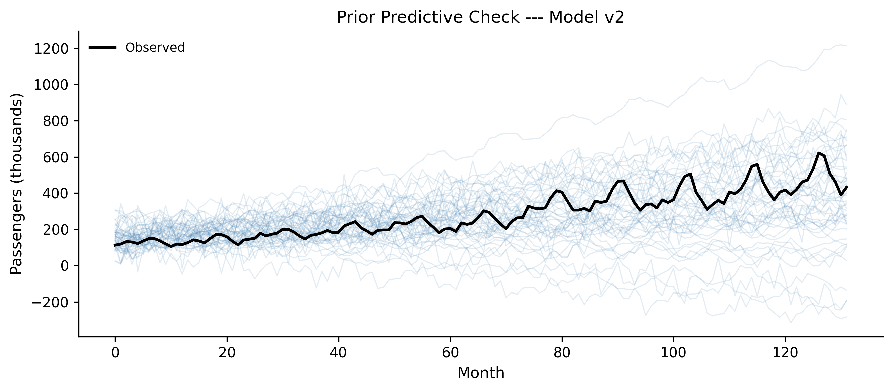
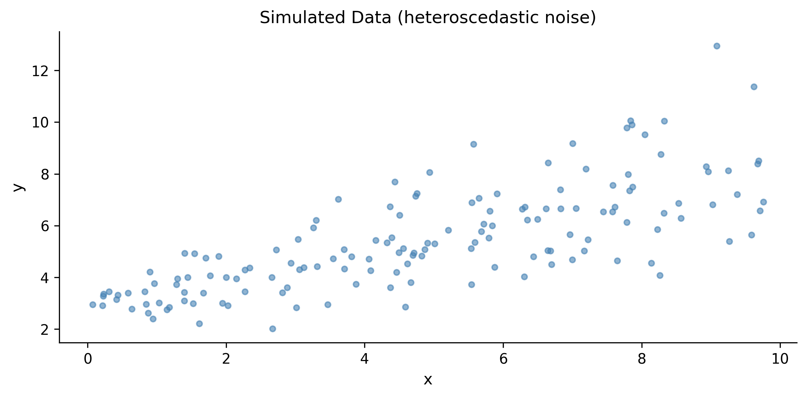
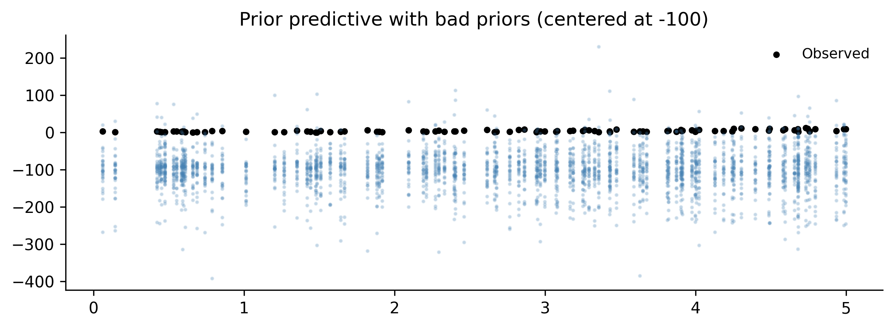

Building a Bayesian model is not a single act. You do not write down some priors, press “fit,” and publish whatever comes out. That approach works about as well as writing code without ever running it — you might get lucky, but probably not.
The Bayesian workflow is a cycle. You specify a model, check whether its assumptions make sense before it ever sees data, fit it, inspect the machinery that produced the fit, ask whether the fitted model can reproduce data that looks like reality, and then — almost always — revise and try again. The cycle repeats until you have a model that is good enough for the question you are trying to answer.
This idea was formalized by @gelman2020bayesian, but practitioners have been doing it informally for decades. Thomas Wiecki, one of the creators of PyMC, puts it simply: “Start with the simplest model and slowly keep incorporating more structure.” The workflow makes this process systematic rather than ad hoc.
Wiecki describes three stages of modeling maturity that most teams pass through:
Stage 1: Implicit models. Everyone uses models—even a spreadsheet with =AVERAGE(B2:B100) is a model. But the assumptions are hidden and uncertainty is ignored.
Stage 2: Statistical models with uncertainty. You formalize the model, fit it explicitly, and report uncertainty. This is where most data science teams operate.
Stage 3: Complex structured models. Hierarchical effects, time-varying parameters, causal structure. This is where the real leverage is, but few teams reach it because the workflow overhead feels daunting.
The Bayesian workflow is what makes Stage 3 practical. It gives you a systematic way to build complexity incrementally, catching mistakes at each step instead of debugging a monolithic model at the end.
In this chapter you will learn the full cycle, step by step, and then run through it end-to-end on a real dataset. By the end you will have a repeatable process for any Bayesian modeling project.
5.1 What Is the Bayesian Workflow?
Most introductions to Bayesian statistics end with Bayes’ theorem and a fitted posterior. That is like learning to drive by studying the engine. Useful, but it will not get you home.
The Bayesian workflow is the full trip from “I have data” to “I trust this model’s answers.” It has six steps, and they form a loop:
Specify a model — choose priors, likelihood, and structure.
Prior predictive check — simulate data from the priors alone to see if the model’s assumptions are remotely plausible.
Fit the model — run MCMC to get the posterior.
Diagnose the fit — check whether the sampler actually worked.
Posterior predictive check — simulate data from the fitted model and compare it to the real data.
Revise or compare — if something is wrong, fix it and go back to step 1.
Figure 5.1: The Bayesian workflow is a loop: specify, check, fit, diagnose, check again, revise.
The crucial insight is that steps 2 and 5 — the predictive checks — are where you actually learn something. Prior predictive checks catch bad assumptions before you waste time fitting. Posterior predictive checks catch model failures after fitting. Together they form a feedback loop that drives you toward a model worth trusting.
Let us work through each step with code. We will use a single dataset throughout: monthly airline passenger counts from 1949 to 1960. This is a classic time series with a clear trend and seasonal pattern — simple enough to understand at a glance, but complex enough that a naive model will visibly fail.
Figure 5.2: Monthly airline passengers (thousands), 1949–1960. A clear upward trend with growing seasonal swings.
Two features jump out: a roughly exponential upward trend, and a seasonal pattern that gets bigger over time (the peaks and troughs widen as the level rises). A good model will need to capture both. But we will start simple and let the workflow tell us what to fix.
5.2 Step 1: Prior Predictive Checks
Before fitting a model to data, you should ask: do the priors even make sense?
Prior predictive checking means sampling from your model without conditioning on any observed data. You draw parameter values from the prior distributions, push them through the model’s likelihood, and generate synthetic datasets. If those synthetic datasets look nothing like data that could plausibly exist in the real world, your priors are wrong. As Chris Fonnesbeck, another PyMC core developer, advises: “Always visualize priors before fitting.” It is the cheapest sanity check in the entire workflow.
Thomas Wiecki demonstrates this vividly with COVID-19 case counts. He started with the simplest possible model: an exponential growth curve for German confirmed cases over the first 30 days. The priors were wide and centered at zero—a common “let the data speak” default. The prior predictive samples immediately revealed the problem: negative case counts (people “un-catching” the disease), downward slopes during an epidemic, and wildly implausible trajectories. Worse, the sampler broke entirely—the mass matrix diagonal went to zero, a sign that the prior placed too much weight in degenerate regions of parameter space.
The fix came in stages. First, Wiecki centered the intercept prior at 100 (a known case-count threshold) and the slope prior at \(\ln(1.33)\) (doubling every three days, from early epidemiological literature). He switched the likelihood from Normal to negative binomial—a natural choice for count data with overdispersion. The prior predictive samples now produced trajectories that were all positive and increasing. The sampler converged cleanly.
But the posterior predictive check revealed the next problem: the exponential model fit the first 30 days well but extrapolated to infinity. A logistic growth model, with a carrying capacity parameter bounded between 1,000 and 80 million, captured the leveling-off effect. LOO-CV confirmed that the logistic model beat the exponential. Each cycle of the workflow—prior check, fit, diagnose, posterior check, revise—pointed directly to what needed fixing.
The lesson is not about COVID modeling specifically. It is about the workflow: start simple, let the diagnostics tell you what is wrong, fix that, and iterate. The fix is not to make priors tight. It is to make them plausible. You are not trying to nail the answer ahead of time. You are trying to exclude nonsense. As Wiecki puts it: “If your priors produce humans that are 50 feet tall, the priors are wrong.”
5.2.1 A first (bad) model
Let us start with the simplest possible model for the airline data: a linear trend, nothing else. We will deliberately choose vague priors to see what happens.
with pm.Model() as model_v1:# Priors --- deliberately vague intercept = pm.Normal("intercept", mu=0, sigma=500) slope = pm.Normal("slope", mu=0, sigma=10) sigma = pm.HalfNormal("sigma", sigma=100)# Linear trend mu = intercept + slope * months# Likelihood obs = pm.Normal("obs", mu=mu, sigma=sigma, observed=passengers, )
Now sample from the prior predictive — no data involved yet:
with model_v1: prior_pred_v1 = pm.sample_prior_predictive( samples=100, random_seed=rng, )
Figure 5.3: Prior predictive samples from Model v1. The priors allow wildly implausible trajectories: negative passengers, downward trends, values in the millions.
Look at those prior predictive samples. Many lines plunge into negative territory — you cannot have negative passengers. Some shoot into the millions. Some trend downward even though we can see the data clearly goes up. The priors are not wrong in some deep philosophical sense, but they waste the model’s effort exploring parameter regions that produce nonsense.
5.2.2 Improving the priors
We know a few things before looking at the data:
Passenger counts are positive (well above zero in this era).
There is an upward trend in air travel during the 1950s.
Monthly counts are in the hundreds, not millions.
Let us encode that knowledge:
with pm.Model() as model_v1b:# Informative but not tight priors intercept = pm.Normal("intercept", mu=150, sigma=50) slope = pm.Normal("slope", mu=2, sigma=2) sigma = pm.HalfNormal("sigma", sigma=50) mu = intercept + slope * months obs = pm.Normal("obs", mu=mu, sigma=sigma, observed=passengers, )
with model_v1b: prior_pred_v1b = pm.sample_prior_predictive( samples=100, random_seed=rng, )
Figure 5.4: Prior predictive samples after setting informative priors. The trajectories are plausible: positive, upward-trending, in a reasonable range.
Much better. The prior predictive samples now produce trajectories that are at least in the right ballpark: positive, trending upward, in the hundreds. We have not forced the model to produce the right answer — we have just excluded the obviously wrong ones.
When to stop tuning priors
You are not trying to match the data with your priors. You are trying to generate synthetic data that could plausibly exist in the domain. If your prior predictive samples include “humans are 50 feet tall” or “negative infection counts,” keep tuning. If they produce a range of plausible-looking datasets, move on to fitting.
5.3 Step 2: Fitting the Model
Once the prior predictive check passes — meaning the priors produce plausible data — you fit the model with pm.sample(). This runs Markov chain Monte Carlo (MCMC) to draw samples from the posterior distribution.
When you call pm.sample(), PyMC prints a progress bar for each chain. Here is what to watch for:
Tuning phase (first 1000 samples by default): The sampler adapts its step size and mass matrix. These samples are discarded. If the sampler gets stuck here — very slow progress, or error messages about the mass matrix — it usually means your model has a problem, not that you need more tuning steps.
Sampling phase (next 2000 samples by default): These are the draws that form your posterior. The progress bar shows speed (iterations per second) and any warnings about divergences.
Divergences: If you see a warning like “There were N divergences after tuning,” pay attention. We will cover divergences properly in Section 5.4, but for now: divergences mean the sampler struggled to explore some region of the posterior. A few divergences out of thousands of samples might be tolerable; dozens or hundreds mean something is wrong.
The “folk theorem of statistical computing,” as described by Andrew Gelman, says: if you have trouble fitting your model, you probably have a bad model. Do not blame the sampler. Fix the model.
5.4 Step 3: MCMC Diagnostics
You have samples from the posterior. But are they good samples? MCMC is not guaranteed to work. The sampler might not have converged, or it might have gotten stuck in one region of the parameter space. You need to check.
Chapter 6 covers diagnostics in depth. Here we cover the minimum viable diagnostic check — the three things you should look at every single time.
5.4.1 1. Trace plots
A trace plot shows the sampled values for each parameter across all chains. You want to see the “fuzzy caterpillar” pattern: all chains mixing well, exploring the same region, with no long excursions or stuck periods.
Figure 5.5: Trace plots for Model v1b. All four chains mix well and converge to the same region.
Good trace plots look like white noise on the right panels (the trace) and like smooth, overlapping densities on the left panels (the posteriors). If one chain is stuck at a different value, or the trace shows long flat periods, something is wrong.
5.4.2 2. Summary statistics: R-hat and ESS
az.summary() gives you the posterior mean, standard deviation, and two critical diagnostics:
R-hat (\(\hat{R}\)): Measures whether all chains converged to the same distribution. Should be very close to 1.0 — anything above 1.01 is a warning sign.
ESS (Effective Sample Size): Measures how many independent samples you effectively have, accounting for autocorrelation. Should be at least 400, ideally over 1000. Two flavors: ESS bulk (for the center of the distribution) and ESS tail (for the tails).
az.summary(trace_v1b)
mean
sd
hdi_3%
hdi_97%
mcse_mean
mcse_sd
ess_bulk
ess_tail
r_hat
intercept
84.990
8.133
69.772
100.265
0.136
0.098
3586.0
4120.0
1.0
slope
2.988
0.107
2.782
3.187
0.002
0.001
3560.0
4306.0
1.0
sigma
48.306
2.968
42.727
53.886
0.043
0.040
4675.0
4350.0
1.0
If R-hat is close to 1.0 and ESS is above 400 for all parameters, you can proceed. If not, first try running longer chains. If that does not help, the model itself likely needs revision.
5.4.3 3. Divergences
Check the sampling report that PyMC printed during fitting. If there were divergences, you need to investigate. For now, just know that divergences are the sampler’s way of saying “I found a region of the posterior that I couldn’t explore properly.” Common fixes include reparameterizing the model or increasing target_accept (we will cover both in Chapter 6).
The minimum viable diagnostic check
Every time you fit a model, check these three things:
Trace plots — do the chains look like fuzzy caterpillars?
R-hat < 1.01 and ESS > 400 for all parameters?
Zero divergences (or very few)?
If all three pass, proceed to posterior predictive checks. If any fail, stop and fix the problem before interpreting the results.
5.5 Step 4: Posterior Predictive Checks
The model fit looks clean. But does the model actually describe the data? This is the most important question in the workflow, and posterior predictive checks answer it.
The idea is simple: take parameter values from the posterior, plug them back into the model, and generate synthetic data. Then compare that synthetic data to the real data. If the model is capturing the data- generating process, the synthetic data should look like the real data.
with model_v1b: ppc_v1b = pm.sample_posterior_predictive( trace_v1b, random_seed=rng, )
ArviZ provides plot_ppc() for the overall distribution, but for time series data it is more informative to plot the predictions against the observed time series:
Figure 5.6: Posterior predictive check for Model v1b (linear trend only). The model captures the upward trend but completely misses the seasonal pattern.
The linear model captures the broad upward trend. But look at the observed data (black line): it oscillates wildly around the model’s predictions. Those oscillations are the seasonal pattern — summer peaks, winter troughs — and the linear model knows nothing about them. The posterior predictive interval is wide enough to contain most of the data points, but only because the model compensates with a large \(\sigma\). That is not a good fit; it is a blurry fit.
5.5.1 What a good vs. bad PPC looks like
A good posterior predictive check means:
The synthetic data has the same structure as the real data — same patterns, same variability, same range.
The observed data falls within the posterior predictive intervals without the intervals being absurdly wide.
A bad posterior predictive check means:
The synthetic data is missing visible structure in the real data (like our missing seasonality).
The observed data regularly falls outside the predictive intervals.
The intervals are so wide they would be consistent with almost anything (the model is not saying much).
Our Model v1b clearly has a bad PPC. The seasonal wiggles in the observed data are a systematic pattern the model cannot reproduce. Time to revise.
5.6 Step 5: Model Revision
The posterior predictive check told us exactly what is wrong: the model is missing seasonality. This is the beauty of the workflow — you do not have to guess what to fix. The PPC shows you where the model fails, and that guides your revision.
The principle is: start simple, add complexity only when diagnostics demand it. We started with a linear trend. The PPC demanded seasonality. So we add seasonality — but nothing more.
5.6.1 Model v2: trend + seasonality
Airline traffic has a 12-month seasonal cycle. We can model this with sine and cosine terms (Fourier features) at the annual frequency:
Run the prior predictive check again to make sure the new model’s priors are still sensible:
with model_v2: prior_pred_v2 = pm.sample_prior_predictive( samples=100, random_seed=rng, )
fig, ax = plt.subplots(figsize=(9, 4))prior_obs = prior_pred_v2.prior_predictive["obs"].valuesfor i inrange(min(50, prior_obs.shape[1])): ax.plot( months, prior_obs[0, i, :], alpha=0.15, color="steelblue", linewidth=0.8, )ax.plot(months, passengers, color="black", linewidth=2, label="Observed")ax.set_xlabel("Month")ax.set_ylabel("Passengers (thousands)")ax.set_title("Prior Predictive Check --- Model v2")ax.legend()fig.tight_layout()plt.show()

Figure 5.7: Prior predictive check for Model v2. The seasonal component produces oscillating trajectories — plausible for airline data.
The prior predictive samples now show oscillating trajectories with upward trends — qualitatively similar to what airline data looks like. Good enough. Fit the model:
Figure 5.9: Posterior predictive check for Model v2. The model now captures seasonality, but the seasonal amplitude grows in the data while the model assumes constant amplitude.
Progress! The model now captures the seasonal oscillation. But look carefully at the residuals: early on, the observed peaks and troughs are small, and the model fits them well. Later, the observed seasonal swings get much larger, but the model’s seasonal amplitude stays the same. The model underpredicts the peaks and overpredicts the troughs in the later years.
This is a multiplicative seasonal pattern: the seasonal effect grows proportionally with the trend. Our model uses an additive seasonal effect. Time for another revision.
5.6.2 Model v3: multiplicative seasonality via log transform
A standard trick for multiplicative seasonality is to model the log of the data. In log space, a multiplicative effect becomes additive:
log_passengers = np.log(passengers)with pm.Model() as model_v3:# Trend in log space intercept = pm.Normal("intercept", mu=5.0, sigma=0.5) slope = pm.Normal("slope", mu=0.01, sigma=0.01)# Seasonal in log space beta_sin = pm.Normal("beta_sin", mu=0, sigma=0.3) beta_cos = pm.Normal("beta_cos", mu=0, sigma=0.3) sigma = pm.HalfNormal("sigma", sigma=0.2) mu = (intercept+ slope * months+ beta_sin * sin_term+ beta_cos * cos_term) obs = pm.Normal("obs", mu=mu, sigma=sigma, observed=log_passengers, )
Figure 5.10: Posterior predictive check for Model v3 (log-space model), shown in original scale. The multiplicative seasonality now matches the growing amplitude in the data.
Now the seasonal amplitude grows with the trend, matching the data. The 95% posterior predictive interval is tighter than v2’s, and it tracks the observed data closely through both the early years (small seasonal swings) and the later years (large seasonal swings). This is a much better model.
Figure 5.11: Residuals for Model v3 in log space. No obvious systematic pattern remains.
The residuals look reasonably random — no strong systematic pattern. There might be some remaining structure (a hint of autocorrelation), but for a first-pass model, this is solid.
5.7 Step 6: Model Comparison
Sometimes you end up with multiple models that all pass their diagnostic checks. How do you choose between them? Eyeballing posterior predictive plots works for clear winners, but when models are close in quality, you need a quantitative comparison.
ArviZ provides tools for this based on approximate leave-one-out cross- validation (LOO-CV) and the Widely Applicable Information Criterion (WAIC). Both estimate a model’s out-of-sample predictive accuracy — how well the model would predict new data it has not seen.
5.7.1 LOO-CV with az.compare()
LOO-CV uses Pareto-smoothed importance sampling (PSIS) to estimate what would happen if you left out each data point and predicted it from the rest. It is more stable than WAIC for most problems.
# Add LOO to each traceloo_v1b = az.loo(trace_v1b, model_v1b)loo_v2 = az.loo(trace_v2, model_v2)loo_v3 = az.loo(trace_v3, model_v3)comparison = az.compare( {"v1b: linear": trace_v1b,"v2: additive seasonal": trace_v2,"v3: log multiplicative": trace_v3, },)comparison
Figure 5.12: Model comparison using LOO-CV. Lower ELPD values are better. Model v3 (log-space multiplicative seasonality) wins clearly.
The comparison table ranks models by their expected log pointwise predictive density (ELPD). Key columns:
elpd_loo: The LOO estimate of out-of-sample predictive accuracy. Higher (less negative) is better.
se: Standard error of the ELPD estimate.
p_loo: Effective number of parameters (a complexity penalty).
weight: Stacking weights — how much of a mixture of these models would maximize predictive accuracy. Useful when no single model dominates.
5.7.2 When to prefer one model over another
Use model comparison when:
You have multiple candidate models that all pass diagnostic checks.
You want to know which model would best predict new data (not just explain the training data).
Do not use model comparison as a substitute for posterior predictive checks. A model can “win” the comparison and still be bad — it is just the least bad option. Always look at the PPC first.
Models must predict the same data
You can only compare models that are fit to the same data. Our v1b and v2 models predict passengers (original scale), while v3 predicts log(passengers). The ELPD values are on different scales and are not directly comparable. The comparison above is for illustration — in practice, you would need to account for the Jacobian of the log transform, or compare v2 and v3 on the same response scale using a different likelihood (e.g., LogNormal for v3).
5.8 A Complete Workflow Example
Let us consolidate everything by running the full workflow on a fresh problem. We will model a dataset from scratch, starting with a bad model and iterating to a good one.
5.8.1 The data
We will simulate data from a known process so we can verify our model recovers the truth. This is a useful exercise: if your workflow cannot recover known parameters from simulated data, it certainly will not work on real data.
# Simulate: y = 3 + 0.5*x + heteroscedastic noisen =150x = rng.uniform(0, 10, size=n)true_a =3.0true_b =0.5true_sigma_base =0.5# Noise grows with x (heteroscedastic)noise_sd = true_sigma_base * (1+0.3* x)y = true_a + true_b * x + rng.normal(0, noise_sd, size=n)
fig, ax = plt.subplots(figsize=(8, 4))ax.scatter(x, y, s=15, alpha=0.6, color="steelblue")ax.set_xlabel("x")ax.set_ylabel("y")ax.set_title("Simulated Data (heteroscedastic noise)")fig.tight_layout()plt.show()

Figure 5.13: Simulated data with heteroscedastic noise. The spread of the points grows with x.
5.8.2 Iteration 1: homoscedastic model
We start by ignoring the heteroscedasticity and fitting a simple linear model with constant variance:
with pm.Model() as workflow_m1: a = pm.Normal("a", mu=0, sigma=10) b = pm.Normal("b", mu=0, sigma=5) s = pm.HalfNormal("s", sigma=5) mu = a + b * x obs = pm.Normal("obs", mu=mu, sigma=s, observed=y)# Prior predictive prior_m1 = pm.sample_prior_predictive( samples=100, random_seed=rng, )# Fit trace_m1 = pm.sample( draws=2000, tune=1000, chains=4, random_seed=rng, return_inferencedata=True, idata_kwargs={"log_likelihood": True}, )# Posterior predictive ppc_m1 = pm.sample_posterior_predictive( trace_m1, random_seed=rng, )
az.summary(trace_m1)
mean
sd
hdi_3%
hdi_97%
mcse_mean
mcse_sd
ess_bulk
ess_tail
r_hat
a
2.795
0.224
2.373
3.217
0.004
0.003
4049.0
4079.0
1.0
b
0.547
0.040
0.471
0.620
0.001
0.000
4089.0
4438.0
1.0
s
1.347
0.079
1.207
1.499
0.001
0.001
4881.0
4457.0
1.0
Diagnostics pass — R-hat near 1.0, ESS well above 400. But let us check the posterior predictive:
Figure 5.14: Posterior predictive check, iteration 1. The model fits the central trend but assumes constant spread, so it overpredicts the noise at low x and underpredicts it at high x.
The residual plot reveals the problem: the spread of residuals fans out as \(x\) increases. The model assumes constant variance, but the data has heteroscedastic noise. We need to let \(\sigma\) vary with \(x\).
5.8.3 Iteration 2: heteroscedastic model
with pm.Model() as workflow_m2: a = pm.Normal("a", mu=0, sigma=10) b = pm.Normal("b", mu=0, sigma=5)# Let sigma depend on x s_intercept = pm.HalfNormal("s_intercept", sigma=2) s_slope = pm.HalfNormal("s_slope", sigma=1) s = s_intercept + s_slope * x mu = a + b * x obs = pm.Normal("obs", mu=mu, sigma=s, observed=y) prior_m2 = pm.sample_prior_predictive( samples=100, random_seed=rng, ) trace_m2 = pm.sample( draws=2000, tune=1000, chains=4, random_seed=rng, return_inferencedata=True, idata_kwargs={"log_likelihood": True}, ) ppc_m2 = pm.sample_posterior_predictive( trace_m2, random_seed=rng, )
Figure 5.15: Posterior predictive check, iteration 2. The model now captures the growing variance, with prediction intervals that widen with x.
The prediction intervals now widen with \(x\), matching the heteroscedastic pattern in the data. The residuals look much more uniform. Let us compare the two models:
The posterior means should land close to the true parameter values. This gives us confidence that the model is working correctly and the workflow led us to the right model structure.
5.9 Common Workflow Mistakes
Even experienced modelers make these mistakes. Learn to recognize them and you will save yourself hours of debugging.
5.9.1 1. Skipping prior predictive checks
This is the most common mistake. You write a model, fit it, and only then discover that the priors allowed physically impossible parameter values. The sampler might still converge — to a posterior that is partially constrained by absurd priors. You will not know unless you check.
Fix: Always run pm.sample_prior_predictive() before pm.sample(). Spend 30 seconds looking at the output. It is the cheapest diagnostic in the entire workflow.
5.9.2 2. Ignoring divergences
PyMC warns you about divergences for a reason. “It’s only 5 divergences out of 8000 samples” is not a safe excuse. Even a few divergences can mean the sampler failed to explore an important region of the posterior, biasing your results.
Fix: If you see divergences, first try increasing target_accept (e.g., from the default 0.8 to 0.95 or 0.99). If that does not help, reparameterize the model. Chapter 6 covers specific reparameterization strategies.
5.9.3 3. Overfitting with too-complex models
More parameters does not mean a better model. A model with 20 parameters will fit the training data beautifully and predict new data terribly. The Bayesian framework helps with this (priors regularize), but it does not make you immune.
Fix: Use model comparison (LOO-CV) to detect overfitting. Compare a simpler model to a more complex one. If the complex model does not meaningfully improve out-of-sample predictive accuracy, prefer the simpler one.
5.9.4 4. Comparing models that fit different data
LOO-CV and WAIC compare models based on their predictions for the same observed data. If you transform the response variable (e.g., log(y) vs y), or subset the data differently between models, the comparison is invalid.
Fix: Make sure all models in a comparison predict the same response variable at the same observations. If you want to compare a model on y with a model on log(y), use a LogNormal likelihood for the log-space model so both predict y.
5.9.5 5. Treating the first model as the final model
The workflow is a loop, not a line. If you stop after one iteration, you are doing frequentist statistics with extra steps.
Fix: Build at least two models. Compare them. The first model’s job is to show you what is wrong, not to give you the answer.
5.10 Exercises
Work through these exercises to practice the full workflow. Each one requires you to specify a model, check priors, fit, diagnose, check the posterior predictive, and revise.
5.10.1 Exercise 1: Poisson regression
Simulate count data from a Poisson process with a log-linear rate: \(\lambda(x) = \exp(0.5 + 0.3x)\). Fit a Poisson regression model in PyMC. Run the full workflow: prior predictive check, fit, diagnostics, posterior predictive check. Does your model recover the true parameters?
Build a model with intentionally bad priors: fit a Normal likelihood to strictly positive count data, with an intercept prior centered at \(-100\). Run the prior predictive check. What does it tell you? Fix the priors and rerun. Compare the diagnostics (R-hat, ESS) before and after.
Solution
# Use the Poisson data from Exercise 1with pm.Model() as ex2_bad: alpha = pm.Normal("alpha", mu=-100, sigma=10) beta = pm.Normal("beta", mu=0, sigma=10) sigma = pm.HalfNormal("sigma", sigma=50) mu = alpha + beta * x_ex1 obs = pm.Normal("obs", mu=mu, sigma=sigma, observed=y_ex1) prior_bad = pm.sample_prior_predictive( samples=50, random_seed=rng, )# Plot prior predictivefig, ax = plt.subplots(figsize=(8, 3))prior_obs = prior_bad.prior_predictive["obs"].valuesfor i inrange(min(30, prior_obs.shape[1])): ax.plot( x_ex1, prior_obs[0, i, :],".", alpha=0.2, color="steelblue", markersize=3, )ax.scatter(x_ex1, y_ex1, s=10, color="black", label="Observed")ax.set_title("Prior predictive with bad priors (centered at -100)")ax.legend()fig.tight_layout()plt.show()# The prior predictive samples will be far below the actual data,# centered around -100 instead of the positive counts we observe.# Fix: use the Poisson model from Exercise 1.print("The bad priors place most prior mass far below zero,")print("while the data is strictly positive. This model is misspecified")print("both in priors (wrong location) and likelihood (Normal for counts).")

The bad priors place most prior mass far below zero,
while the data is strictly positive. This model is misspecified
both in priors (wrong location) and likelihood (Normal for counts).
5.10.3 Exercise 3: Model comparison
Using the airline passenger data from this chapter, build a model with two Fourier harmonics (periods of 12 and 6 months) in log space. Fit it and compare it to Model v3 (one harmonic) using az.compare(). Does the second harmonic improve predictive accuracy?
rank elpd_loo p_loo elpd_diff weight se \
v4: 2 harmonics 0 140.463524 6.864109 0.000000 0.923872 9.095951
v3: 1 harmonic 1 114.744418 4.651248 25.719106 0.076128 7.562464
dse warning scale
v4: 2 harmonics 0.000000 False log
v3: 1 harmonic 7.253726 False log
If v4 has a meaningfully higher ELPD, the second harmonic
captures additional seasonal structure worth modeling.
5.10.4 Exercise 4: End-to-end workflow on new data
Generate data from a quadratic relationship with normal noise: \(y = 2 + x - 0.3x^2 + \varepsilon\), \(\varepsilon \sim N(0, 1)\), for \(x \in [0, 5]\). Run the full workflow: start with a linear model, discover via PPC that it fails, then revise to a quadratic model. Compare both models with az.compare().
Solution
n_ex4 =120x_ex4 = rng.uniform(0, 5, size=n_ex4)y_ex4 =2+ x_ex4 -0.3* x_ex4**2+ rng.normal(0, 1, size=n_ex4)# Linear model (will miss the curvature)with pm.Model() as ex4_linear: a = pm.Normal("a", mu=0, sigma=5) b = pm.Normal("b", mu=0, sigma=5) s = pm.HalfNormal("s", sigma=5) mu = a + b * x_ex4 obs = pm.Normal("obs", mu=mu, sigma=s, observed=y_ex4) trace_lin = pm.sample( draws=2000, tune=1000, chains=4, random_seed=rng, return_inferencedata=True, idata_kwargs={"log_likelihood": True}, ) ppc_lin = pm.sample_posterior_predictive( trace_lin, random_seed=rng, )# Quadratic modelwith pm.Model() as ex4_quad: a = pm.Normal("a", mu=0, sigma=5) b = pm.Normal("b", mu=0, sigma=5) c = pm.Normal("c", mu=0, sigma=5) s = pm.HalfNormal("s", sigma=5) mu = a + b * x_ex4 + c * x_ex4**2 obs = pm.Normal("obs", mu=mu, sigma=s, observed=y_ex4) trace_quad = pm.sample( draws=2000, tune=1000, chains=4, random_seed=rng, return_inferencedata=True, idata_kwargs={"log_likelihood": True}, ) ppc_quad = pm.sample_posterior_predictive( trace_quad, random_seed=rng, )# Comparecomp = az.compare( {"linear": trace_lin, "quadratic": trace_quad},)print(comp)# Verify parameter recoverypost_q = trace_quad.posteriorprint(f"\nTrue a=2.0, posterior={float(post_q['a'].mean()):.2f}")print(f"True b=1.0, posterior={float(post_q['b'].mean()):.2f}")print(f"True c=-0.3, posterior={float(post_q['c'].mean()):.2f}")
Posterior predictive check: simulate from the fitted model. Compare to the real data. Look for systematic misfit.
Revise: fix what the PPC revealed and loop back to step 1. Or compare multiple models with az.compare().
You will run through this loop many times in a modeling project. That is not a sign of failure — it is the process working as designed. The first model’s job is to be wrong in an informative way. Each iteration narrows the gap between what the model thinks and what the data shows.
As Thomas Wiecki says: start with something simple, find out where it breaks, and fix that. The workflow gives you the tools to do this systematically.
Source Code
# The Bayesian Workflow```{python}#| echo: falseimport warningswarnings.filterwarnings("ignore", category=FutureWarning)warnings.filterwarnings("ignore", category=UserWarning)```Building a Bayesian model is not a single act. You do not write downsome priors, press "fit," and publish whatever comes out. That approachworks about as well as writing code without ever running it --- you mightget lucky, but probably not.The Bayesian workflow is a *cycle*. You specify a model, check whetherits assumptions make sense before it ever sees data, fit it, inspect themachinery that produced the fit, ask whether the fitted model canreproduce data that looks like reality, and then --- almost always ---revise and try again. The cycle repeats until you have a model that isgood enough for the question you are trying to answer.This idea was formalized by @gelman2020bayesian, but practitioners havebeen doing it informally for decades. Thomas Wiecki, one of the creatorsof PyMC, puts it simply: "Start with the simplest model and slowly keepincorporating more structure." The workflow makes this process systematicrather than ad hoc.Wiecki describes three stages of modeling maturity that most teams passthrough:1. **Stage 1: Implicit models.** Everyone uses models---even a spreadsheet with `=AVERAGE(B2:B100)` is a model. But the assumptions are hidden and uncertainty is ignored.2. **Stage 2: Statistical models with uncertainty.** You formalize the model, fit it explicitly, and report uncertainty. This is where most data science teams operate.3. **Stage 3: Complex structured models.** Hierarchical effects, time-varying parameters, causal structure. This is where the real leverage is, but few teams reach it because the workflow overhead feels daunting.The Bayesian workflow is what makes Stage 3 practical. It gives you asystematic way to build complexity incrementally, catching mistakes ateach step instead of debugging a monolithic model at the end.In this chapter you will learn the full cycle, step by step, and thenrun through it end-to-end on a real dataset. By the end you will have arepeatable process for any Bayesian modeling project.## What Is the Bayesian Workflow?Most introductions to Bayesian statistics end with Bayes' theorem anda fitted posterior. That is like learning to drive by studying theengine. Useful, but it will not get you home.The Bayesian workflow is the full trip from "I have data" to "I trustthis model's answers." It has six steps, and they form a loop:1. **Specify** a model --- choose priors, likelihood, and structure.2. **Prior predictive check** --- simulate data from the priors alone to see if the model's assumptions are remotely plausible.3. **Fit** the model --- run MCMC to get the posterior.4. **Diagnose** the fit --- check whether the sampler actually worked.5. **Posterior predictive check** --- simulate data from the fitted model and compare it to the real data.6. **Revise** or **compare** --- if something is wrong, fix it and go back to step 1.```{python}#| label: fig-workflow-diagram#| fig-cap: "The Bayesian workflow is a loop: specify, check, fit, diagnose, check again, revise."import matplotlib.pyplot as pltimport matplotlib.patches as mpatchesimport numpy as npplt.style.use('assets/book.mplstyle')fig, ax = plt.subplots(figsize=(8, 5))steps = ["1. Specify\nmodel","2. Prior\npredictive","3. Fit\n(MCMC)","4. Diagnose\nconvergence","5. Posterior\npredictive","6. Revise /\ncompare",]# Arrange steps in a rounded rectangle layoutpositions = [ (1.0, 3.0), (3.0, 3.0), (5.0, 3.0), (5.0, 1.0), (3.0, 1.0), (1.0, 1.0),]colors = ["#4878CF", "#4878CF", "#6ACC65","#D65F5F", "#D65F5F", "#B47CC7",]boxes = []for (x, y), label, color inzip(positions, steps, colors): box = mpatches.FancyBboxPatch( (x -0.7, y -0.4), 1.4, 0.8, boxstyle="round,pad=0.1", facecolor=color, edgecolor="black", alpha=0.85, linewidth=1.5, ) ax.add_patch(box) ax.text( x, y, label, ha="center", va="center", fontsize=10, fontweight="bold", color="white", )# Draw arrows between consecutive stepsarrow_kwargs =dict( arrowstyle="->,head_width=0.3,head_length=0.2", color="black", linewidth=1.5,)arrow_pairs = [ ((1.7, 3.0), (2.3, 3.0)), ((3.7, 3.0), (4.3, 3.0)), ((5.0, 2.6), (5.0, 1.4)), ((4.3, 1.0), (3.7, 1.0)), ((2.3, 1.0), (1.7, 1.0)),]for start, end in arrow_pairs: ax.annotate("", xy=end, xytext=start, arrowprops=arrow_kwargs, )# Revision arrow looping back to step 1ax.annotate("", xy=(1.0, 2.6), xytext=(1.0, 1.4), arrowprops=dict( arrowstyle="->,head_width=0.3,head_length=0.2", color="black", linewidth=1.5, connectionstyle="arc3,rad=0.0", ),)ax.set_xlim(-0.2, 6.2)ax.set_ylim(0.2, 3.8)ax.set_aspect("equal")ax.axis("off")fig.tight_layout()plt.show()```The crucial insight is that steps 2 and 5 --- the predictive checks ---are where you actually learn something. Prior predictive checks catchbad assumptions *before* you waste time fitting. Posterior predictivechecks catch model failures *after* fitting. Together they form afeedback loop that drives you toward a model worth trusting.Let us work through each step with code. We will use a single datasetthroughout: monthly airline passenger counts from 1949 to 1960. This isa classic time series with a clear trend and seasonal pattern --- simpleenough to understand at a glance, but complex enough that a naive modelwill visibly fail.```{python}#| label: load-dataimport pymc as pmimport arviz as azimport pandas as pdrng = np.random.default_rng(42)# Airline passengers dataset# Monthly totals (in thousands) of international airline passengerspassengers = np.array([112, 118, 132, 129, 121, 135, 148, 148, 136, 119, 104, 118,115, 126, 141, 135, 125, 149, 170, 170, 158, 133, 114, 140,145, 150, 178, 163, 172, 178, 199, 199, 184, 162, 146, 166,171, 180, 193, 181, 183, 218, 230, 242, 209, 191, 172, 194,196, 196, 236, 235, 229, 243, 264, 272, 237, 211, 180, 201,204, 188, 235, 227, 234, 264, 302, 293, 259, 229, 203, 242,263, 264, 327, 317, 313, 318, 374, 413, 405, 355, 306, 306,315, 301, 356, 348, 355, 422, 465, 467, 404, 347, 305, 336,340, 318, 362, 348, 363, 435, 491, 505, 404, 359, 310, 337,360, 342, 406, 396, 420, 472, 548, 559, 463, 407, 362, 405,417, 391, 419, 461, 472, 535, 622, 606, 508, 461, 390, 432,])n_months =len(passengers)months = np.arange(n_months)df = pd.DataFrame({"month": months,"passengers": passengers,})df.head(10)``````{python}#| label: fig-raw-data#| fig-cap: "Monthly airline passengers (thousands), 1949--1960. A clear upward trend with growing seasonal swings."fig, ax = plt.subplots(figsize=(9, 4))ax.plot(months, passengers, marker="o", markersize=3, linewidth=1.2)ax.set_xlabel("Month (from Jan 1949)")ax.set_ylabel("Passengers (thousands)")ax.set_title("Airline Passengers, 1949--1960")fig.tight_layout()plt.show()```Two features jump out: a roughly exponential upward trend, and aseasonal pattern that gets bigger over time (the peaks and troughs widenas the level rises). A good model will need to capture both. But we willstart simple and let the workflow tell us what to fix.## Step 1: Prior Predictive ChecksBefore fitting a model to data, you should ask: *do the priors even makesense?*Prior predictive checking means sampling from your model *without*conditioning on any observed data. You draw parameter values from theprior distributions, push them through the model's likelihood, andgenerate synthetic datasets. If those synthetic datasets look nothinglike data that could plausibly exist in the real world, your priors arewrong. As Chris Fonnesbeck, another PyMC core developer, advises:"Always visualize priors before fitting." It is the cheapest sanitycheck in the entire workflow.Thomas Wiecki demonstrates this vividly with COVID-19 case counts. Hestarted with the simplest possible model: an exponential growth curvefor German confirmed cases over the first 30 days. The priors were wideand centered at zero---a common "let the data speak" default. The priorpredictive samples immediately revealed the problem: negative casecounts (people "un-catching" the disease), downward slopes during anepidemic, and wildly implausible trajectories. Worse, the sampler brokeentirely---the mass matrix diagonal went to zero, a sign that theprior placed too much weight in degenerate regions of parameter space.The fix came in stages. First, Wiecki centered the intercept prior at100 (a known case-count threshold) and the slope prior at $\ln(1.33)$(doubling every three days, from early epidemiological literature).He switched the likelihood from Normal to negative binomial---anatural choice for count data with overdispersion. The priorpredictive samples now produced trajectories that were all positiveand increasing. The sampler converged cleanly.But the posterior predictive check revealed the next problem: theexponential model fit the first 30 days well but extrapolated toinfinity. A logistic growth model, with a carrying capacity parameterbounded between 1,000 and 80 million, captured the leveling-offeffect. LOO-CV confirmed that the logistic model beat the exponential.Each cycle of the workflow---prior check, fit, diagnose, posteriorcheck, revise---pointed directly to what needed fixing.The lesson is not about COVID modeling specifically. It is about theworkflow: start simple, let the diagnostics tell you what is wrong,fix that, and iterate. The fix is not to make priors *tight*. It isto make them *plausible*. You are not trying to nail the answer aheadof time. You are trying to exclude nonsense. As Wiecki puts it: "Ifyour priors produce humans that are 50 feet tall, the priors arewrong."### A first (bad) modelLet us start with the simplest possible model for the airline data: alinear trend, nothing else. We will deliberately choose vague priors tosee what happens.```{python}#| label: model-v1with pm.Model() as model_v1:# Priors --- deliberately vague intercept = pm.Normal("intercept", mu=0, sigma=500) slope = pm.Normal("slope", mu=0, sigma=10) sigma = pm.HalfNormal("sigma", sigma=100)# Linear trend mu = intercept + slope * months# Likelihood obs = pm.Normal("obs", mu=mu, sigma=sigma, observed=passengers, )```Now sample from the prior predictive --- no data involved yet:```{python}#| label: prior-predictive-v1with model_v1: prior_pred_v1 = pm.sample_prior_predictive( samples=100, random_seed=rng, )``````{python}#| label: fig-prior-pred-v1#| fig-cap: "Prior predictive samples from Model v1. The priors allow wildly implausible trajectories: negative passengers, downward trends, values in the millions."fig, ax = plt.subplots(figsize=(9, 4))prior_obs = prior_pred_v1.prior_predictive["obs"].values# prior_obs shape: (chains, draws, obs)for i inrange(min(50, prior_obs.shape[1])): ax.plot( months, prior_obs[0, i, :], alpha=0.15, color="steelblue", linewidth=0.8, )ax.plot(months, passengers, color="black", linewidth=2, label="Observed")ax.set_xlabel("Month")ax.set_ylabel("Passengers (thousands)")ax.set_title("Prior Predictive Check --- Model v1")ax.legend()fig.tight_layout()plt.show()```Look at those prior predictive samples. Many lines plunge into negativeterritory --- you cannot have negative passengers. Some shoot into themillions. Some trend downward even though we can see the data clearlygoes up. The priors are not *wrong* in some deep philosophical sense,but they waste the model's effort exploring parameter regions thatproduce nonsense.### Improving the priorsWe know a few things before looking at the data:- Passenger counts are positive (well above zero in this era).- There is an upward trend in air travel during the 1950s.- Monthly counts are in the hundreds, not millions.Let us encode that knowledge:```{python}#| label: model-v1bwith pm.Model() as model_v1b:# Informative but not tight priors intercept = pm.Normal("intercept", mu=150, sigma=50) slope = pm.Normal("slope", mu=2, sigma=2) sigma = pm.HalfNormal("sigma", sigma=50) mu = intercept + slope * months obs = pm.Normal("obs", mu=mu, sigma=sigma, observed=passengers, )``````{python}#| label: prior-predictive-v1bwith model_v1b: prior_pred_v1b = pm.sample_prior_predictive( samples=100, random_seed=rng, )``````{python}#| label: fig-prior-pred-v1b#| fig-cap: "Prior predictive samples after setting informative priors. The trajectories are plausible: positive, upward-trending, in a reasonable range."fig, ax = plt.subplots(figsize=(9, 4))prior_obs = prior_pred_v1b.prior_predictive["obs"].valuesfor i inrange(min(50, prior_obs.shape[1])): ax.plot( months, prior_obs[0, i, :], alpha=0.15, color="steelblue", linewidth=0.8, )ax.plot(months, passengers, color="black", linewidth=2, label="Observed")ax.set_xlabel("Month")ax.set_ylabel("Passengers (thousands)")ax.set_title("Prior Predictive Check --- Model v1b (better priors)")ax.legend()fig.tight_layout()plt.show()```Much better. The prior predictive samples now produce trajectories thatare at least in the right ballpark: positive, trending upward, in thehundreds. We have not forced the model to produce the *right* answer ---we have just excluded the obviously wrong ones.::: {.callout-tip}## When to stop tuning priorsYou are not trying to match the data with your priors. You are trying togenerate synthetic data that *could plausibly exist* in the domain. Ifyour prior predictive samples include "humans are 50 feet tall" or"negative infection counts," keep tuning. If they produce a range ofplausible-looking datasets, move on to fitting.:::## Step 2: Fitting the ModelOnce the prior predictive check passes --- meaning the priors produceplausible data --- you fit the model with `pm.sample()`. This runsMarkov chain Monte Carlo (MCMC) to draw samples from the posteriordistribution.```{python}#| label: fit-v1bwith model_v1b: trace_v1b = pm.sample( draws=2000, tune=1000, chains=4, random_seed=rng, return_inferencedata=True, idata_kwargs={"log_likelihood": True}, )```### What the progress bar meansWhen you call `pm.sample()`, PyMC prints a progress bar for each chain.Here is what to watch for:- **Tuning phase** (first 1000 samples by default): The sampler adapts its step size and mass matrix. These samples are discarded. If the sampler gets stuck here --- very slow progress, or error messages about the mass matrix --- it usually means your model has a problem, not that you need more tuning steps.- **Sampling phase** (next 2000 samples by default): These are the draws that form your posterior. The progress bar shows speed (iterations per second) and any warnings about divergences.- **Divergences**: If you see a warning like "There were N divergences after tuning," pay attention. We will cover divergences properly in @sec-diagnostics, but for now: divergences mean the sampler struggled to explore some region of the posterior. A few divergences out of thousands of samples might be tolerable; dozens or hundreds mean something is wrong.The "folk theorem of statistical computing," as described by AndrewGelman, says: **if you have trouble fitting your model, you probablyhave a bad model.** Do not blame the sampler. Fix the model.## Step 3: MCMC Diagnostics {#sec-diagnostics}You have samples from the posterior. But are they *good* samples? MCMCis not guaranteed to work. The sampler might not have converged, or itmight have gotten stuck in one region of the parameter space. You needto check.Chapter 6 covers diagnostics in depth. Here we cover the minimum viablediagnostic check --- the three things you should look at every singletime.### 1. Trace plotsA trace plot shows the sampled values for each parameter across allchains. You want to see the "fuzzy caterpillar" pattern: all chainsmixing well, exploring the same region, with no long excursions or stuckperiods.```{python}#| label: fig-trace-v1b#| fig-cap: "Trace plots for Model v1b. All four chains mix well and converge to the same region."az.plot_trace(trace_v1b, figsize=(10, 6))plt.tight_layout()plt.show()```Good trace plots look like white noise on the right panels (the trace)and like smooth, overlapping densities on the left panels (theposteriors). If one chain is stuck at a different value, or the traceshows long flat periods, something is wrong.### 2. Summary statistics: R-hat and ESS`az.summary()` gives you the posterior mean, standard deviation, and twocritical diagnostics:- **R-hat** ($\hat{R}$): Measures whether all chains converged to the same distribution. Should be very close to 1.0 --- anything above 1.01 is a warning sign.- **ESS** (Effective Sample Size): Measures how many independent samples you effectively have, accounting for autocorrelation. Should be at least 400, ideally over 1000. Two flavors: ESS bulk (for the center of the distribution) and ESS tail (for the tails).```{python}#| label: summary-v1baz.summary(trace_v1b)```If R-hat is close to 1.0 and ESS is above 400 for all parameters, youcan proceed. If not, first try running longer chains. If that does nothelp, the model itself likely needs revision.### 3. DivergencesCheck the sampling report that PyMC printed during fitting. If therewere divergences, you need to investigate. For now, just know thatdivergences are the sampler's way of saying "I found a region of theposterior that I couldn't explore properly." Common fixes includereparameterizing the model or increasing `target_accept` (we will coverboth in Chapter 6).::: {.callout-note}## The minimum viable diagnostic checkEvery time you fit a model, check these three things:1. Trace plots --- do the chains look like fuzzy caterpillars?2. R-hat < 1.01 and ESS > 400 for all parameters?3. Zero divergences (or very few)?If all three pass, proceed to posterior predictive checks. If any fail,stop and fix the problem before interpreting the results.:::## Step 4: Posterior Predictive ChecksThe model fit looks clean. But does the model actually describe thedata? This is the most important question in the workflow, and posteriorpredictive checks answer it.The idea is simple: take parameter values from the posterior, plug themback into the model, and generate synthetic data. Then compare thatsynthetic data to the real data. If the model is capturing the data-generating process, the synthetic data should look like the real data.```{python}#| label: ppc-v1bwith model_v1b: ppc_v1b = pm.sample_posterior_predictive( trace_v1b, random_seed=rng, )```ArviZ provides `plot_ppc()` for the overall distribution, but for timeseries data it is more informative to plot the predictions against theobserved time series:```{python}#| label: fig-ppc-v1b#| fig-cap: "Posterior predictive check for Model v1b (linear trend only). The model captures the upward trend but completely misses the seasonal pattern."fig, ax = plt.subplots(figsize=(9, 4))ppc_obs = ppc_v1b.posterior_predictive["obs"].values# Shape: (chains, draws, n_obs)n_chains, n_draws, _ = ppc_obs.shapeppc_flat = ppc_obs.reshape(n_chains * n_draws, -1)# Plot a subset of posterior predictive samplesfor i inrange(0, min(200, ppc_flat.shape[0]), 2): ax.plot( months, ppc_flat[i, :], alpha=0.03, color="steelblue", linewidth=0.5, )# Posterior predictive mean and intervalppc_mean = ppc_flat.mean(axis=0)ppc_lo = np.percentile(ppc_flat, 2.5, axis=0)ppc_hi = np.percentile(ppc_flat, 97.5, axis=0)ax.fill_between( months, ppc_lo, ppc_hi, alpha=0.25, color="steelblue", label="95% PPC interval",)ax.plot(months, ppc_mean, color="steelblue", linewidth=1.5, label="PPC mean")ax.plot(months, passengers, color="black", linewidth=2, label="Observed")ax.set_xlabel("Month")ax.set_ylabel("Passengers (thousands)")ax.set_title("Posterior Predictive Check --- Model v1b (linear trend)")ax.legend()fig.tight_layout()plt.show()```The linear model captures the broad upward trend. But look at theobserved data (black line): it oscillates wildly around the model'spredictions. Those oscillations are the seasonal pattern --- summer peaks,winter troughs --- and the linear model knows nothing about them. Theposterior predictive interval is wide enough to contain most of the datapoints, but only because the model compensates with a large $\sigma$.That is not a good fit; it is a blurry fit.### What a good vs. bad PPC looks likeA **good** posterior predictive check means:- The synthetic data has the same *structure* as the real data --- same patterns, same variability, same range.- The observed data falls within the posterior predictive intervals without the intervals being absurdly wide.A **bad** posterior predictive check means:- The synthetic data is missing visible structure in the real data (like our missing seasonality).- The observed data regularly falls outside the predictive intervals.- The intervals are so wide they would be consistent with almost anything (the model is not saying much).Our Model v1b clearly has a bad PPC. The seasonal wiggles in theobserved data are a systematic pattern the model cannot reproduce. Timeto revise.## Step 5: Model RevisionThe posterior predictive check told us exactly what is wrong: the modelis missing seasonality. This is the beauty of the workflow --- you donot have to guess what to fix. The PPC shows you where the model fails,and that guides your revision.The principle is: **start simple, add complexity only when diagnosticsdemand it.** We started with a linear trend. The PPC demandedseasonality. So we add seasonality --- but nothing more.### Model v2: trend + seasonalityAirline traffic has a 12-month seasonal cycle. We can model this withsine and cosine terms (Fourier features) at the annual frequency:```{python}#| label: model-v2# Fourier features for annual seasonalityperiod =12.0sin_term = np.sin(2* np.pi * months / period)cos_term = np.cos(2* np.pi * months / period)with pm.Model() as model_v2:# Trend intercept = pm.Normal("intercept", mu=150, sigma=50) slope = pm.Normal("slope", mu=2, sigma=2)# Seasonal component beta_sin = pm.Normal("beta_sin", mu=0, sigma=30) beta_cos = pm.Normal("beta_cos", mu=0, sigma=30) sigma = pm.HalfNormal("sigma", sigma=30)# Mean = trend + seasonality mu = (intercept+ slope * months+ beta_sin * sin_term+ beta_cos * cos_term) obs = pm.Normal("obs", mu=mu, sigma=sigma, observed=passengers, )```Run the prior predictive check again to make sure the new model'spriors are still sensible:```{python}#| label: prior-pred-v2with model_v2: prior_pred_v2 = pm.sample_prior_predictive( samples=100, random_seed=rng, )``````{python}#| label: fig-prior-pred-v2#| fig-cap: "Prior predictive check for Model v2. The seasonal component produces oscillating trajectories --- plausible for airline data."fig, ax = plt.subplots(figsize=(9, 4))prior_obs = prior_pred_v2.prior_predictive["obs"].valuesfor i inrange(min(50, prior_obs.shape[1])): ax.plot( months, prior_obs[0, i, :], alpha=0.15, color="steelblue", linewidth=0.8, )ax.plot(months, passengers, color="black", linewidth=2, label="Observed")ax.set_xlabel("Month")ax.set_ylabel("Passengers (thousands)")ax.set_title("Prior Predictive Check --- Model v2")ax.legend()fig.tight_layout()plt.show()```The prior predictive samples now show oscillating trajectories withupward trends --- qualitatively similar to what airline data looks like.Good enough. Fit the model:```{python}#| label: fit-v2with model_v2: trace_v2 = pm.sample( draws=2000, tune=1000, chains=4, random_seed=rng, return_inferencedata=True, idata_kwargs={"log_likelihood": True}, )``````{python}#| label: diag-v2az.summary(trace_v2)``````{python}#| label: fig-trace-v2#| fig-cap: "Trace plots for Model v2. Clean mixing across all chains."az.plot_trace(trace_v2, figsize=(10, 8))plt.tight_layout()plt.show()```Diagnostics look good. Now the posterior predictive check:```{python}#| label: ppc-v2with model_v2: ppc_v2 = pm.sample_posterior_predictive( trace_v2, random_seed=rng, )``````{python}#| label: fig-ppc-v2#| fig-cap: "Posterior predictive check for Model v2. The model now captures seasonality, but the seasonal amplitude grows in the data while the model assumes constant amplitude."fig, ax = plt.subplots(figsize=(9, 4))ppc_obs = ppc_v2.posterior_predictive["obs"].valuesn_chains, n_draws, _ = ppc_obs.shapeppc_flat = ppc_obs.reshape(n_chains * n_draws, -1)ppc_mean = ppc_flat.mean(axis=0)ppc_lo = np.percentile(ppc_flat, 2.5, axis=0)ppc_hi = np.percentile(ppc_flat, 97.5, axis=0)ax.fill_between( months, ppc_lo, ppc_hi, alpha=0.25, color="steelblue", label="95% PPC interval",)ax.plot(months, ppc_mean, color="steelblue", linewidth=1.5, label="PPC mean")ax.plot(months, passengers, color="black", linewidth=2, label="Observed")ax.set_xlabel("Month")ax.set_ylabel("Passengers (thousands)")ax.set_title("Posterior Predictive Check --- Model v2")ax.legend()fig.tight_layout()plt.show()```Progress! The model now captures the seasonal oscillation. But lookcarefully at the residuals: early on, the observed peaks and troughs aresmall, and the model fits them well. Later, the observed seasonal swingsget much larger, but the model's seasonal amplitude stays the same. Themodel underpredicts the peaks and overpredicts the troughs in the lateryears.This is a *multiplicative* seasonal pattern: the seasonal effect growsproportionally with the trend. Our model uses an *additive* seasonaleffect. Time for another revision.### Model v3: multiplicative seasonality via log transformA standard trick for multiplicative seasonality is to model the log ofthe data. In log space, a multiplicative effect becomes additive:```{python}#| label: model-v3log_passengers = np.log(passengers)with pm.Model() as model_v3:# Trend in log space intercept = pm.Normal("intercept", mu=5.0, sigma=0.5) slope = pm.Normal("slope", mu=0.01, sigma=0.01)# Seasonal in log space beta_sin = pm.Normal("beta_sin", mu=0, sigma=0.3) beta_cos = pm.Normal("beta_cos", mu=0, sigma=0.3) sigma = pm.HalfNormal("sigma", sigma=0.2) mu = (intercept+ slope * months+ beta_sin * sin_term+ beta_cos * cos_term) obs = pm.Normal("obs", mu=mu, sigma=sigma, observed=log_passengers, )``````{python}#| label: fit-v3with model_v3: prior_pred_v3 = pm.sample_prior_predictive( samples=100, random_seed=rng, ) trace_v3 = pm.sample( draws=2000, tune=1000, chains=4, random_seed=rng, return_inferencedata=True, idata_kwargs={"log_likelihood": True}, ) ppc_v3 = pm.sample_posterior_predictive( trace_v3, random_seed=rng, )``````{python}#| label: diag-v3az.summary(trace_v3)``````{python}#| label: fig-ppc-v3#| fig-cap: "Posterior predictive check for Model v3 (log-space model), shown in original scale. The multiplicative seasonality now matches the growing amplitude in the data."fig, ax = plt.subplots(figsize=(9, 4))ppc_obs = ppc_v3.posterior_predictive["obs"].valuesn_chains, n_draws, _ = ppc_obs.shapeppc_flat = ppc_obs.reshape(n_chains * n_draws, -1)# Transform back to original scaleppc_flat_orig = np.exp(ppc_flat)ppc_mean = ppc_flat_orig.mean(axis=0)ppc_lo = np.percentile(ppc_flat_orig, 2.5, axis=0)ppc_hi = np.percentile(ppc_flat_orig, 97.5, axis=0)ax.fill_between( months, ppc_lo, ppc_hi, alpha=0.25, color="steelblue", label="95% PPC interval",)ax.plot( months, ppc_mean, color="steelblue", linewidth=1.5, label="PPC mean",)ax.plot(months, passengers, color="black", linewidth=2, label="Observed")ax.set_xlabel("Month")ax.set_ylabel("Passengers (thousands)")ax.set_title("Posterior Predictive Check --- Model v3 (log-space)")ax.legend()fig.tight_layout()plt.show()```Now the seasonal amplitude grows with the trend, matching the data. The95% posterior predictive interval is tighter than v2's, and it tracksthe observed data closely through both the early years (small seasonalswings) and the later years (large seasonal swings). This is a muchbetter model.Let us look at the residuals to make sure:```{python}#| label: fig-residuals-v3#| fig-cap: "Residuals for Model v3 in log space. No obvious systematic pattern remains."fig, ax = plt.subplots(figsize=(9, 3))ppc_log_mean = ppc_flat.mean(axis=0)residuals = log_passengers - ppc_log_meanax.scatter(months, residuals, s=15, alpha=0.7, color="steelblue")ax.axhline(y=0, color="black", linewidth=0.8, linestyle="--")ax.set_xlabel("Month")ax.set_ylabel("Residual (log scale)")ax.set_title("Residuals --- Model v3")fig.tight_layout()plt.show()```The residuals look reasonably random --- no strong systematic pattern.There might be some remaining structure (a hint of autocorrelation), butfor a first-pass model, this is solid.## Step 6: Model ComparisonSometimes you end up with multiple models that all pass their diagnosticchecks. How do you choose between them? Eyeballing posterior predictiveplots works for clear winners, but when models are close in quality, youneed a quantitative comparison.ArviZ provides tools for this based on approximate leave-one-out cross-validation (LOO-CV) and the Widely Applicable Information Criterion(WAIC). Both estimate a model's out-of-sample predictive accuracy ---how well the model would predict new data it has not seen.### LOO-CV with `az.compare()`LOO-CV uses Pareto-smoothed importance sampling (PSIS) to estimate whatwould happen if you left out each data point and predicted it from therest. It is more stable than WAIC for most problems.```{python}#| label: model-comparison# Add LOO to each traceloo_v1b = az.loo(trace_v1b, model_v1b)loo_v2 = az.loo(trace_v2, model_v2)loo_v3 = az.loo(trace_v3, model_v3)comparison = az.compare( {"v1b: linear": trace_v1b,"v2: additive seasonal": trace_v2,"v3: log multiplicative": trace_v3, },)comparison``````{python}#| label: fig-model-comparison#| fig-cap: "Model comparison using LOO-CV. Lower ELPD values are better. Model v3 (log-space multiplicative seasonality) wins clearly."az.plot_compare(comparison, figsize=(9, 3))plt.tight_layout()plt.show()```The comparison table ranks models by their expected log pointwisepredictive density (ELPD). Key columns:- **elpd_loo**: The LOO estimate of out-of-sample predictive accuracy. Higher (less negative) is better.- **se**: Standard error of the ELPD estimate.- **p_loo**: Effective number of parameters (a complexity penalty).- **weight**: Stacking weights --- how much of a mixture of these models would maximize predictive accuracy. Useful when no single model dominates.### When to prefer one model over anotherUse model comparison when:- You have multiple candidate models that all pass diagnostic checks.- You want to know which model would best predict *new* data (not just explain the training data).Do *not* use model comparison as a substitute for posterior predictivechecks. A model can "win" the comparison and still be bad --- it is justthe least bad option. Always look at the PPC first.::: {.callout-warning}## Models must predict the same dataYou can only compare models that are fit to the same data. Our v1b andv2 models predict `passengers` (original scale), while v3 predicts`log(passengers)`. The ELPD values are on different scales and are notdirectly comparable. The comparison above is for illustration --- inpractice, you would need to account for the Jacobian of the logtransform, or compare v2 and v3 on the same response scale using adifferent likelihood (e.g., LogNormal for v3).:::## A Complete Workflow ExampleLet us consolidate everything by running the full workflow on a freshproblem. We will model a dataset from scratch, starting with a bad modeland iterating to a good one.### The dataWe will simulate data from a known process so we can verify ourmodel recovers the truth. This is a useful exercise: if your workflowcannot recover known parameters from simulated data, it certainly willnot work on real data.```{python}#| label: sim-data# Simulate: y = 3 + 0.5*x + heteroscedastic noisen =150x = rng.uniform(0, 10, size=n)true_a =3.0true_b =0.5true_sigma_base =0.5# Noise grows with x (heteroscedastic)noise_sd = true_sigma_base * (1+0.3* x)y = true_a + true_b * x + rng.normal(0, noise_sd, size=n)``````{python}#| label: fig-sim-data#| fig-cap: "Simulated data with heteroscedastic noise. The spread of the points grows with x."fig, ax = plt.subplots(figsize=(8, 4))ax.scatter(x, y, s=15, alpha=0.6, color="steelblue")ax.set_xlabel("x")ax.set_ylabel("y")ax.set_title("Simulated Data (heteroscedastic noise)")fig.tight_layout()plt.show()```### Iteration 1: homoscedastic modelWe start by ignoring the heteroscedasticity and fitting a simple linearmodel with constant variance:```{python}#| label: workflow-iter1with pm.Model() as workflow_m1: a = pm.Normal("a", mu=0, sigma=10) b = pm.Normal("b", mu=0, sigma=5) s = pm.HalfNormal("s", sigma=5) mu = a + b * x obs = pm.Normal("obs", mu=mu, sigma=s, observed=y)# Prior predictive prior_m1 = pm.sample_prior_predictive( samples=100, random_seed=rng, )# Fit trace_m1 = pm.sample( draws=2000, tune=1000, chains=4, random_seed=rng, return_inferencedata=True, idata_kwargs={"log_likelihood": True}, )# Posterior predictive ppc_m1 = pm.sample_posterior_predictive( trace_m1, random_seed=rng, )``````{python}#| label: workflow-diag1az.summary(trace_m1)```Diagnostics pass --- R-hat near 1.0, ESS well above 400. But let uscheck the posterior predictive:```{python}#| label: fig-workflow-ppc1#| fig-cap: "Posterior predictive check, iteration 1. The model fits the central trend but assumes constant spread, so it overpredicts the noise at low x and underpredicts it at high x."fig, axes = plt.subplots(1, 2, figsize=(12, 4))# Left: predictions vs dataax = axes[0]ppc_obs = ppc_m1.posterior_predictive["obs"].valuesn_c, n_d, _ = ppc_obs.shapeppc_flat = ppc_obs.reshape(n_c * n_d, -1)ppc_mean = ppc_flat.mean(axis=0)ppc_lo = np.percentile(ppc_flat, 2.5, axis=0)ppc_hi = np.percentile(ppc_flat, 97.5, axis=0)sort_idx = np.argsort(x)ax.fill_between( x[sort_idx], ppc_lo[sort_idx], ppc_hi[sort_idx], alpha=0.3, color="steelblue", label="95% PPC",)ax.scatter(x, y, s=10, alpha=0.5, color="black", label="Observed")ax.set_xlabel("x")ax.set_ylabel("y")ax.set_title("PPC --- Iteration 1")ax.legend(fontsize=9)# Right: residuals vs xax = axes[1]residuals = y - ppc_meanax.scatter(x, residuals, s=10, alpha=0.5, color="steelblue")ax.axhline(0, color="black", linewidth=0.8, linestyle="--")ax.set_xlabel("x")ax.set_ylabel("Residual")ax.set_title("Residuals --- Iteration 1")fig.tight_layout()plt.show()```The residual plot reveals the problem: the spread of residuals fans outas $x$ increases. The model assumes constant variance, but the data hasheteroscedastic noise. We need to let $\sigma$ vary with $x$.### Iteration 2: heteroscedastic model```{python}#| label: workflow-iter2with pm.Model() as workflow_m2: a = pm.Normal("a", mu=0, sigma=10) b = pm.Normal("b", mu=0, sigma=5)# Let sigma depend on x s_intercept = pm.HalfNormal("s_intercept", sigma=2) s_slope = pm.HalfNormal("s_slope", sigma=1) s = s_intercept + s_slope * x mu = a + b * x obs = pm.Normal("obs", mu=mu, sigma=s, observed=y) prior_m2 = pm.sample_prior_predictive( samples=100, random_seed=rng, ) trace_m2 = pm.sample( draws=2000, tune=1000, chains=4, random_seed=rng, return_inferencedata=True, idata_kwargs={"log_likelihood": True}, ) ppc_m2 = pm.sample_posterior_predictive( trace_m2, random_seed=rng, )``````{python}#| label: workflow-diag2az.summary(trace_m2)``````{python}#| label: fig-workflow-ppc2#| fig-cap: "Posterior predictive check, iteration 2. The model now captures the growing variance, with prediction intervals that widen with x."fig, axes = plt.subplots(1, 2, figsize=(12, 4))ax = axes[0]ppc_obs = ppc_m2.posterior_predictive["obs"].valuesn_c, n_d, _ = ppc_obs.shapeppc_flat = ppc_obs.reshape(n_c * n_d, -1)ppc_mean = ppc_flat.mean(axis=0)ppc_lo = np.percentile(ppc_flat, 2.5, axis=0)ppc_hi = np.percentile(ppc_flat, 97.5, axis=0)sort_idx = np.argsort(x)ax.fill_between( x[sort_idx], ppc_lo[sort_idx], ppc_hi[sort_idx], alpha=0.3, color="steelblue", label="95% PPC",)ax.scatter(x, y, s=10, alpha=0.5, color="black", label="Observed")ax.set_xlabel("x")ax.set_ylabel("y")ax.set_title("PPC --- Iteration 2")ax.legend(fontsize=9)ax = axes[1]residuals = y - ppc_meanax.scatter(x, residuals, s=10, alpha=0.5, color="steelblue")ax.axhline(0, color="black", linewidth=0.8, linestyle="--")ax.set_xlabel("x")ax.set_ylabel("Residual")ax.set_title("Residuals --- Iteration 2")fig.tight_layout()plt.show()```The prediction intervals now widen with $x$, matching the heteroscedasticpattern in the data. The residuals look much more uniform. Let uscompare the two models:```{python}#| label: workflow-comparecomparison_wf = az.compare( {"m1: constant sigma": trace_m1,"m2: sigma(x)": trace_m2, },)comparison_wf``````{python}#| label: fig-workflow-compare#| fig-cap: "Model comparison. The heteroscedastic model (m2) has better out-of-sample predictive accuracy."az.plot_compare(comparison_wf, figsize=(9, 3))plt.tight_layout()plt.show()```Let us also check that the model recovers the true parameters:```{python}#| label: workflow-recoverypost = trace_m2.posteriorprint("Parameter recovery:")print(f" a: true={true_a:.1f}, "f"posterior mean={float(post['a'].mean()):.2f}")print(f" b: true={true_b:.1f}, "f"posterior mean={float(post['b'].mean()):.2f}")print(f" s_intercept: true={true_sigma_base:.1f}, "f"posterior mean={float(post['s_intercept'].mean()):.2f}")print(f" s_slope: true={true_sigma_base *0.3:.2f}, "f"posterior mean={float(post['s_slope'].mean()):.2f}")```The posterior means should land close to the true parameter values. Thisgives us confidence that the model is working correctly and the workflowled us to the right model structure.## Common Workflow MistakesEven experienced modelers make these mistakes. Learn to recognize themand you will save yourself hours of debugging.### 1. Skipping prior predictive checksThis is the most common mistake. You write a model, fit it, and onlythen discover that the priors allowed physically impossible parametervalues. The sampler might still converge --- to a posterior that ispartially constrained by absurd priors. You will not know unless youcheck.**Fix:** Always run `pm.sample_prior_predictive()` before`pm.sample()`. Spend 30 seconds looking at the output. It is thecheapest diagnostic in the entire workflow.### 2. Ignoring divergencesPyMC warns you about divergences for a reason. "It's only 5divergences out of 8000 samples" is not a safe excuse. Even a fewdivergences can mean the sampler failed to explore an important regionof the posterior, biasing your results.**Fix:** If you see divergences, first try increasing `target_accept`(e.g., from the default 0.8 to 0.95 or 0.99). If that does not help,reparameterize the model. Chapter 6 covers specific reparameterizationstrategies.### 3. Overfitting with too-complex modelsMore parameters does not mean a better model. A model with 20 parameterswill fit the training data beautifully and predict new data terribly.The Bayesian framework helps with this (priors regularize), but it doesnot make you immune.**Fix:** Use model comparison (LOO-CV) to detect overfitting. Compare asimpler model to a more complex one. If the complex model does notmeaningfully improve out-of-sample predictive accuracy, prefer thesimpler one.### 4. Comparing models that fit different dataLOO-CV and WAIC compare models based on their predictions for *the sameobserved data*. If you transform the response variable (e.g.,`log(y)` vs `y`), or subset the data differently between models, thecomparison is invalid.**Fix:** Make sure all models in a comparison predict the same responsevariable at the same observations. If you want to compare a model on`y` with a model on `log(y)`, use a LogNormal likelihood for thelog-space model so both predict `y`.### 5. Treating the first model as the final modelThe workflow is a loop, not a line. If you stop after one iteration, youare doing frequentist statistics with extra steps.**Fix:** Build at least two models. Compare them. The first model's jobis to show you what is wrong, not to give you the answer.## ExercisesWork through these exercises to practice the full workflow. Each onerequires you to specify a model, check priors, fit, diagnose, check theposterior predictive, and revise.### Exercise 1: Poisson regressionSimulate count data from a Poisson process with a log-linear rate:$\lambda(x) = \exp(0.5 + 0.3x)$. Fit a Poisson regression model inPyMC. Run the full workflow: prior predictive check, fit, diagnostics,posterior predictive check. Does your model recover the true parameters?::: {.callout-tip collapse="true"}## Solution```{python}#| label: ex1-solution# Simulate datan_ex1 =100x_ex1 = rng.uniform(0, 5, size=n_ex1)true_log_rate =0.5+0.3* x_ex1y_ex1 = rng.poisson(np.exp(true_log_rate))with pm.Model() as ex1_model: alpha = pm.Normal("alpha", mu=0, sigma=2) beta = pm.Normal("beta", mu=0, sigma=2) log_rate = alpha + beta * x_ex1 obs = pm.Poisson("obs", mu=pm.math.exp(log_rate), observed=y_ex1) prior_ex1 = pm.sample_prior_predictive( samples=50, random_seed=rng, ) trace_ex1 = pm.sample( draws=2000, tune=1000, chains=4, random_seed=rng, return_inferencedata=True, ) ppc_ex1 = pm.sample_posterior_predictive( trace_ex1, random_seed=rng, )print(az.summary(trace_ex1))print(f"\nTrue alpha=0.5, "f"posterior={float(trace_ex1.posterior['alpha'].mean()):.3f}")print(f"True beta=0.3, "f"posterior={float(trace_ex1.posterior['beta'].mean()):.3f}")```:::### Exercise 2: Diagnose a broken modelBuild a model with intentionally bad priors: fit a Normal likelihoodto strictly positive count data, with an intercept prior centered at$-100$. Run the prior predictive check. What does it tell you? Fix thepriors and rerun. Compare the diagnostics (R-hat, ESS) before andafter.::: {.callout-tip collapse="true"}## Solution```{python}#| label: ex2-solution# Use the Poisson data from Exercise 1with pm.Model() as ex2_bad: alpha = pm.Normal("alpha", mu=-100, sigma=10) beta = pm.Normal("beta", mu=0, sigma=10) sigma = pm.HalfNormal("sigma", sigma=50) mu = alpha + beta * x_ex1 obs = pm.Normal("obs", mu=mu, sigma=sigma, observed=y_ex1) prior_bad = pm.sample_prior_predictive( samples=50, random_seed=rng, )# Plot prior predictivefig, ax = plt.subplots(figsize=(8, 3))prior_obs = prior_bad.prior_predictive["obs"].valuesfor i inrange(min(30, prior_obs.shape[1])): ax.plot( x_ex1, prior_obs[0, i, :],".", alpha=0.2, color="steelblue", markersize=3, )ax.scatter(x_ex1, y_ex1, s=10, color="black", label="Observed")ax.set_title("Prior predictive with bad priors (centered at -100)")ax.legend()fig.tight_layout()plt.show()# The prior predictive samples will be far below the actual data,# centered around -100 instead of the positive counts we observe.# Fix: use the Poisson model from Exercise 1.print("The bad priors place most prior mass far below zero,")print("while the data is strictly positive. This model is misspecified")print("both in priors (wrong location) and likelihood (Normal for counts).")```:::### Exercise 3: Model comparisonUsing the airline passenger data from this chapter, build a model withtwo Fourier harmonics (periods of 12 and 6 months) in log space. Fitit and compare it to Model v3 (one harmonic) using `az.compare()`.Does the second harmonic improve predictive accuracy?::: {.callout-tip collapse="true"}## Solution```{python}#| label: ex3-solutionsin1 = np.sin(2* np.pi * months /12.0)cos1 = np.cos(2* np.pi * months /12.0)sin2 = np.sin(2* np.pi * months /6.0)cos2 = np.cos(2* np.pi * months /6.0)with pm.Model() as model_v4: intercept = pm.Normal("intercept", mu=5.0, sigma=0.5) slope = pm.Normal("slope", mu=0.01, sigma=0.01) b_sin1 = pm.Normal("b_sin1", mu=0, sigma=0.3) b_cos1 = pm.Normal("b_cos1", mu=0, sigma=0.3) b_sin2 = pm.Normal("b_sin2", mu=0, sigma=0.3) b_cos2 = pm.Normal("b_cos2", mu=0, sigma=0.3) sigma = pm.HalfNormal("sigma", sigma=0.2) mu = (intercept + slope * months+ b_sin1 * sin1 + b_cos1 * cos1+ b_sin2 * sin2 + b_cos2 * cos2) obs = pm.Normal("obs", mu=mu, sigma=sigma, observed=log_passengers) trace_v4 = pm.sample( draws=2000, tune=1000, chains=4, random_seed=rng, return_inferencedata=True, idata_kwargs={"log_likelihood": True}, )comparison_ex3 = az.compare( {"v3: 1 harmonic": trace_v3,"v4: 2 harmonics": trace_v4, },)print(comparison_ex3)print("\nIf v4 has a meaningfully higher ELPD, the second harmonic")print("captures additional seasonal structure worth modeling.")```:::### Exercise 4: End-to-end workflow on new dataGenerate data from a quadratic relationship with normal noise:$y = 2 + x - 0.3x^2 + \varepsilon$, $\varepsilon \sim N(0, 1)$, for$x \in [0, 5]$. Run the full workflow: start with a linear model,discover via PPC that it fails, then revise to a quadratic model.Compare both models with `az.compare()`.::: {.callout-tip collapse="true"}## Solution```{python}#| label: ex4-solutionn_ex4 =120x_ex4 = rng.uniform(0, 5, size=n_ex4)y_ex4 =2+ x_ex4 -0.3* x_ex4**2+ rng.normal(0, 1, size=n_ex4)# Linear model (will miss the curvature)with pm.Model() as ex4_linear: a = pm.Normal("a", mu=0, sigma=5) b = pm.Normal("b", mu=0, sigma=5) s = pm.HalfNormal("s", sigma=5) mu = a + b * x_ex4 obs = pm.Normal("obs", mu=mu, sigma=s, observed=y_ex4) trace_lin = pm.sample( draws=2000, tune=1000, chains=4, random_seed=rng, return_inferencedata=True, idata_kwargs={"log_likelihood": True}, ) ppc_lin = pm.sample_posterior_predictive( trace_lin, random_seed=rng, )# Quadratic modelwith pm.Model() as ex4_quad: a = pm.Normal("a", mu=0, sigma=5) b = pm.Normal("b", mu=0, sigma=5) c = pm.Normal("c", mu=0, sigma=5) s = pm.HalfNormal("s", sigma=5) mu = a + b * x_ex4 + c * x_ex4**2 obs = pm.Normal("obs", mu=mu, sigma=s, observed=y_ex4) trace_quad = pm.sample( draws=2000, tune=1000, chains=4, random_seed=rng, return_inferencedata=True, idata_kwargs={"log_likelihood": True}, ) ppc_quad = pm.sample_posterior_predictive( trace_quad, random_seed=rng, )# Comparecomp = az.compare( {"linear": trace_lin, "quadratic": trace_quad},)print(comp)# Verify parameter recoverypost_q = trace_quad.posteriorprint(f"\nTrue a=2.0, posterior={float(post_q['a'].mean()):.2f}")print(f"True b=1.0, posterior={float(post_q['b'].mean()):.2f}")print(f"True c=-0.3, posterior={float(post_q['c'].mean()):.2f}")```:::## SummaryThe Bayesian workflow is not a formula. It is a discipline:1. **Specify** a model with priors that exclude nonsense.2. **Prior predictive check**: simulate from the priors. If the synthetic data is implausible, fix the priors.3. **Fit**: run `pm.sample()` and watch for warnings.4. **Diagnose**: trace plots, R-hat < 1.01, ESS > 400, zero divergences.5. **Posterior predictive check**: simulate from the fitted model. Compare to the real data. Look for systematic misfit.6. **Revise**: fix what the PPC revealed and loop back to step 1. Or compare multiple models with `az.compare()`.You will run through this loop many times in a modeling project. That isnot a sign of failure --- it is the process working as designed. Thefirst model's job is to be wrong in an informative way. Each iterationnarrows the gap between what the model thinks and what the data shows.As Thomas Wiecki says: start with something simple, find out where itbreaks, and fix that. The workflow gives you the tools to do thissystematically.